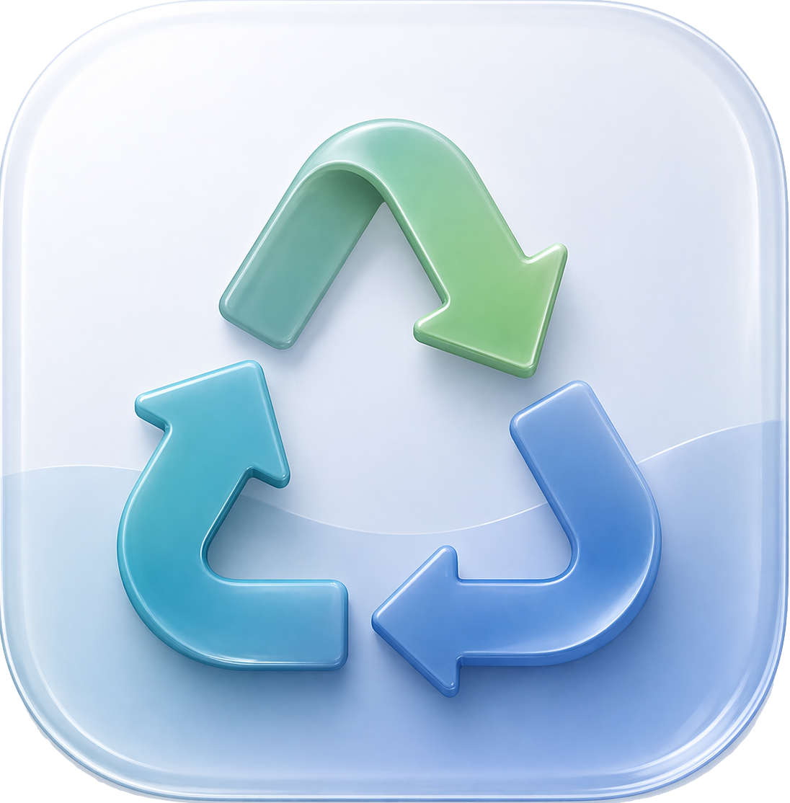

gabfortin.com
gabfortin.com

Matières résiduelles — Bilan massique
Quantités générées par arrondissement · Agglomération de Montréal · 2012–2024
Source : Données ouvertes — Ville de Montréal
gabfortin.com

Quantités générées par arrondissement · Agglomération de Montréal · 2012–2024
Source : Données ouvertes — Ville de Montréal
38,600 t en 2023
48,039 t en 2023
15,426 t en 2023
1,217 t en 2024
12,814 t en 2023
13,422 t en 2023
58,140 t en 2023
20,391 t en 2023
9,594 t en 2023
649 t en 2024
9,447 t en 2023
9,521 t en 2023
29,085 t en 2023
18,218 t en 2023
29,789 t en 2023
48,066 t en 2023
11,366 t en 2023
2,430 t en 2024
34,267 t en 2023
2,177 t en 2024
9,909 t en 2023
30,347 t en 2023
18,249 t en 2023
44,496 t en 2023
51,356 t en 2023
35,392 t en 2023
30,008 t en 2023
2,419 t en 2024
554 t en 2024
24,331 t en 2023
35,565 t en 2023
51,625 t en 2023
9,162 t en 2023